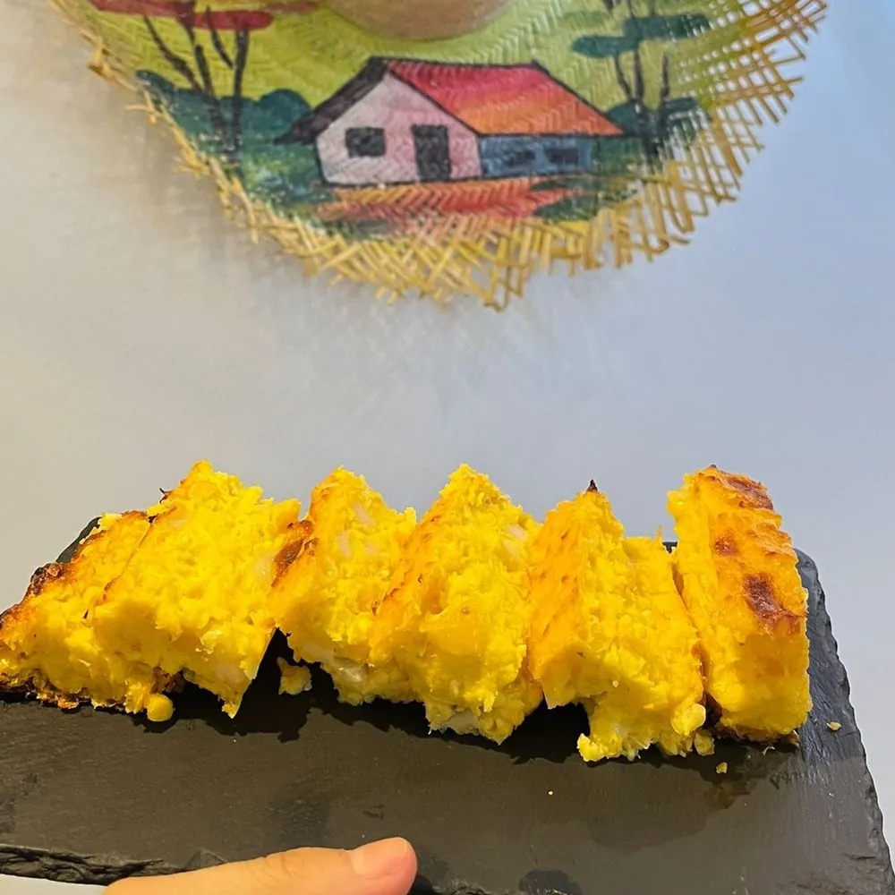
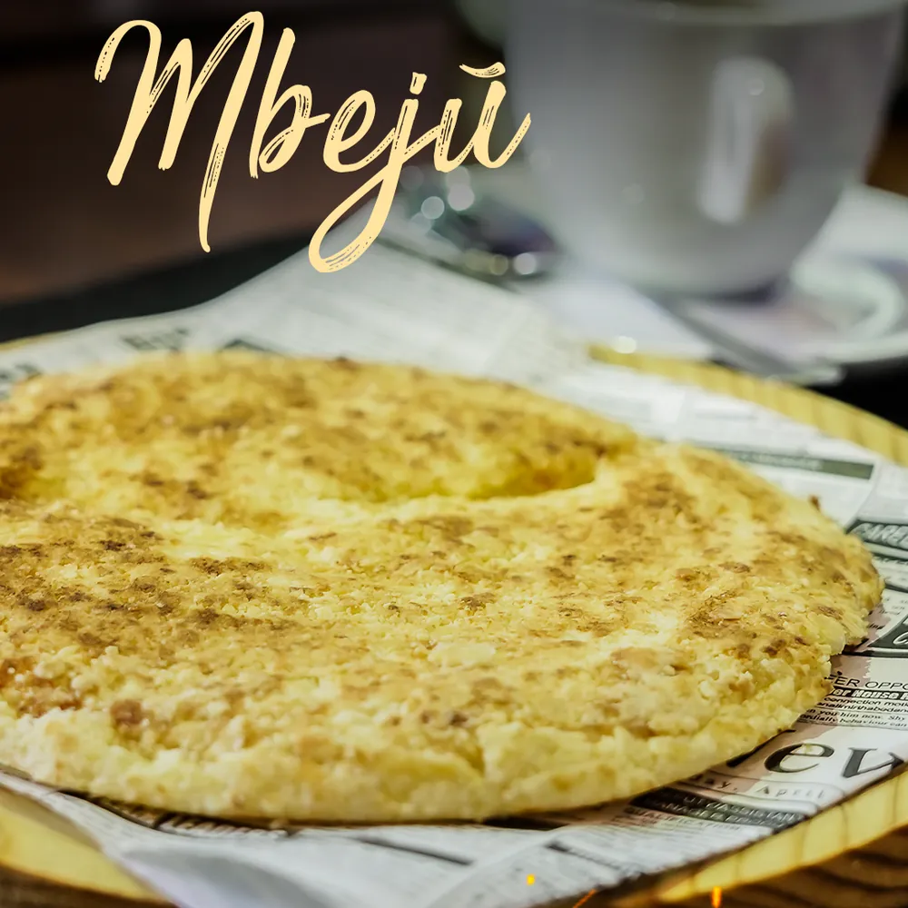
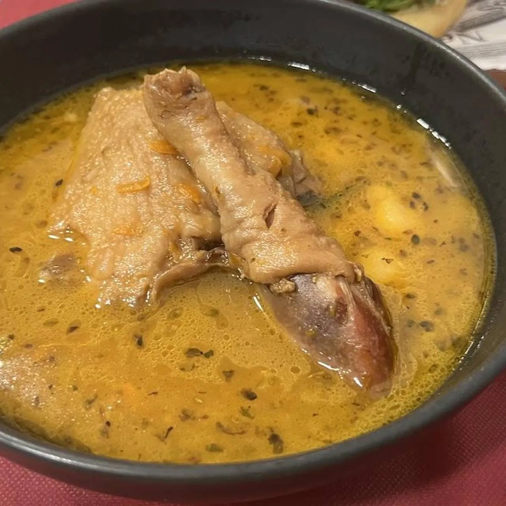
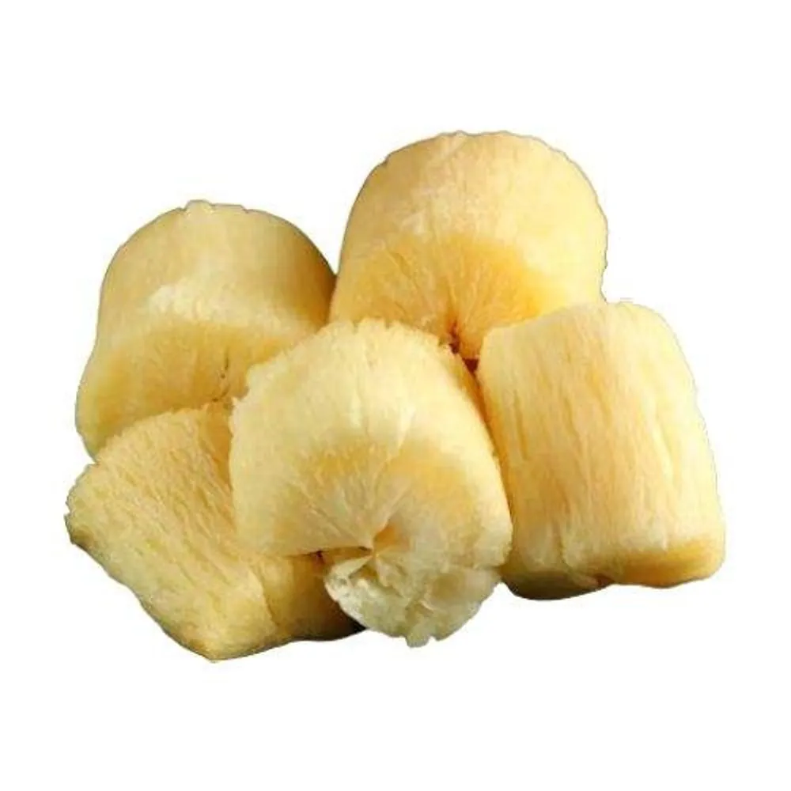

Avati
El maíz
Tierno (choclo) o en harina. Es la base de la chipa guazú, la sopa paraguaya y las bolitas del vorí vorí.
Chipa guazúSopa paraguayaVorí voríEmpanada de choclo
Maíz, mandioca y queso. Con esos tres ingredientes, la sabiduría guaraní y siglos de mestizaje, Paraguay creó una de las cocinas más sabrosas —y menos conocidas— de Sudamérica. Aquí te la presentamos plato a plato.



Si entiendes estos tres ingredientes, entiendes Paraguay. Están en casi todo lo que cocinamos y muchos de nuestros clásicos se elaboran sin trigo.
Tierno (choclo) o en harina. Es la base de la chipa guazú, la sopa paraguaya y las bolitas del vorí vorí.

La yuca. Acompaña cada comida como aquí el pan, y de su almidón nace el mbejú. Frita, hervida o salteada.
Fresco, tierno, en cuajada. Da jugosidad a la sopa paraguaya, se funde en el mbejú y se esconde en las bolitas del vorí.
Pulsa el altavoz para escuchar cómo se pronuncia cada nombre (aunque si lo dices mal, te entendemos igual).
Tres rutas pensadas por Loren para que descubras lo mejor de Paraguay en una sola visita, según con quién vengas.
Un aperitivo típico, una milanesa de las grandes y un refresco brasileño.
La degustación más completa: los tres clásicos, yuca brava y una milanesa para compartir.
La mesa paraguaya completa: empanadas, picada completa y clásicos para todos.
Totales orientativos calculados con los precios de la carta. Bebidas no incluidas salvo indicación.
Paraguay es bilingüe: se habla español y guaraní. En Loren te atendemos en los dos. Aprende estas palabras y sorprende en tu próxima visita.
Toda la carta te espera, en sala o a domicilio.